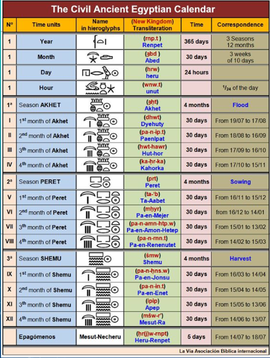

WorldCiv
Table of Contents
- 1. History 1310 - Science and Technology in World Civilization
- 2. Lecture 1 - What is the meaning of Science?
- 3. Lecture 2 - Babylon and beyond
- 4. TODO Lecture 3 Ancient Egypt: Finish updating this info.
- 5. TODO Lecture 4
- 6. TODO Lecture 5
- 7. TODO Lecture 6 - Europe in the Middle Ages; Natural Philosophy: Remind driggers about quadrium
- 8. TODO Lecture 7 - test bank, Golden age of Islamic philosophy: email driggers about magic early Tuesday morning.
- 8.1. What to expect on test.
- 8.2. Outline
- 8.3. Contextualizing Historical Terms
- 8.4. Islamic era maps 1
- 8.5. Islamic era map 2
- 8.6. Scientific terms
- 8.7. Cities of golden age
- 8.8. Hydraulic Tech - The qanat
- 8.9. Transmission of tech
- 8.10. Houses of wisdom
- 8.11. Hunaynn ibn Ishaq (Latin Iohannities)
you/yoo knight us - 8.12. Avicenna - Ibin Sinda
- 8.13. Medicine/Biology and Images 2
- 8.14.
- 8.15. Mosque
- 8.16. observatories
- 8.17. Midrasas? - law centers
- 8.18. TODO Hospitals: The medieval Islamic hospital
in lib - 8.19. Toledo, Spain
- 8.20. Byzantine empire - Byzantium 2
- 8.21. Crusades have huge affects, we don't really get into it…..yet.
- 9. Lecture 8 - Magic; Medieval & Rennnaissance Cathedrals
- 10. Lecture 9 - Revolutions in Science (Part 1): Copernicus
- 11. Lecture 10 - Galileo's Struggle and Triumphs; Magic is test corrections
- 11.1. Galileo and Music
- 11.2. Framing questions
- 11.3. Galileo (1562-1642)
- 11.4. Virginia Galilei/Maria Celeste
- 11.5. Galileo has a problem with authority…
- 11.6. Case Study: Galileo
- 11.7. Starry messenger
- 11.8. Galileo and his world
- 11.9. Court life
- 11.10. Grand duchess Chirstina GD of Tuscany (1565-1637)
- 11.11. Galileo and Heliocentric Theory
- 11.12. New Pope -> Urban VIII
- 11.13. Galileo's other book "Dialogue of the Two Chief World Systems" (1632)
- 11.14. outside of the galileo case study
- 11.15. Other revolutions of Sorts
- 12. LEcture 11? - Was the scientific Rev neither scientif or reolutionary? - Case study NEwton
- 12.1. Framing questions
- 12.2. a little review
- 12.3. Coernicus to Newton
- 12.4. Isaac Newrton (1642-1727)
- 12.5. TODO INtro to Isaac Newton; get copy of Driggers manuscript
- 12.6. Miracle year
- 12.7. Scientific Controversies
- 12.8. Return to Cambridge 1667
- 12.9. New Questions
- 12.10. The Principia 'pren kip e ah'
- 13. Lecture ? - Voyages of Discovery
1 History 1310 - Science and Technology in World Civilization
Date: Lecturer: Driggers
1.1 Questions? :email: edriggers@tntech.edu Office Hours:
T-Th: 4:30-6 What are office hours for?
- Problems reading and retaining information from lecture or textbook.
- Questions about grades, performance, participation, attendance, Etc
- Go over a test or paper
- Recommendations about improvement
2 Lecture 1 - What is the meaning of Science?
- Whare is the use of science?
- Are there ways that science can be improperly?
- Is science value free?
- How do non-epistimic values figure into scientific investigations?
- What are the role of
- contextual values in science?
- Whose values will impact scientific work?
2.1 What do I mean by Values???
- Epistimic-Traditionally means values in the internal processes of science? Like measurement, quantification, ?Testable?
- Non-Epistimic-Means those not in the internal process, often effecting the conceptualization of questions and interpretation of ?data,? things like experiences, psychological worries, political values, ideas about race, gender &c.
- Objectivity is a changing standard throughout history!
2.2 Traditional Conception of Scientific Investigation
- Scientists:
- Observe phenomena, Measure it, and Understand and make products; control phenomena; offer recommendations
- Who are scientists?
- What is deemed phenomena?
- What counts as proper measurement?
- Why are conclusions drawn, verified, and communicated to professionals and the public(s)?
- Is science objective?
- What questions are we as society comfortable with asking?
- What is the role of ethics in scientific investigations?
2.2.1 Nazi Medical Experimentation and the body
- Examples include, but not limited to:
- High Altitude experiments
- Drug experiments
- Freezing water
2.2.2 Drug Testing and Children
- Case of anti-depressants and adolescents
- Re-branding of drugs for profit * Arthritis ##
2.2.3 Conception and understanding of life
- The "Sperm and Egg" Model Traditionally the woman's reproductive system was considered pretty passive, no we know that isn't the case. The woman's body is responsible for "weeding out" the weak of the Man's sperm
2.2.4 Interventions in the environment
+Iron sulfate (Fertilizer) dumping into ocean
3 Lecture 2 - Babylon and beyond
:Lecturer: Driggers :DATE:
3.1 Orientation:
- Survey of history if science, technology, medicine, etc. throughout greater Mesopotamian history
- General Details, geography, Etc.
3.2 TODO Theoretical Point: Verify quotes…
- where SHOULD we start this class?
Most professors start much later, with the Greeks; look at history through their eyes - The power of narrative
- Keep Reading!
- Problem with Near Eastern Studies - Far East Studies??? To have a proper Near east study you have to be near east, most aren't.
3.3 Geographic location:

Figure 1: Fertile Crescent of early agriculture
- Framed in Today's Geopolitical Landscape
Figure 2: More modern representation of area.
3.4 Home to diverse groups of people
- Sumerians
- Akkadians
- Persians
- Babylonians
- Some of the oldest societies
3.5 Hammurabi and his Code
- If any one finds runaway male or female slaves in the open country and bring them to their masters, the master of the slaves shall pay him two shekels of silver.
- If any one is committing a robbery and is caught, then he shall be put to death.
- If a tavern-keeper (feminine) does not accept corn according to gross weight in payment of a drink, but takes money, and the price of the drink is less than that of the corn, she shall be convicted and thrown into the water.
- If a son strike his father, his hands be hewn off.
- If a man knock out the teeth if his equal, his teeth shall be knocked out.
- If a barber, without the knowledge of his master, but the sign of a slave on a slave not to be sold, the hands of the barber shall be cut off.
- If a slave says to his master: "You are not my master" - if they convict him his master shall cut off his ear.
3.6 Timeline
- Goes back to 3500 BC
- Civilization arose around present day Iraq
- Communicated throughout a written language: cuneiform
Figure 3: Cuneiform tablet writing
3.7 Literature: The Epic of Gilgamesh
- Written around 2100 BC
- About 12 books, or about 5 epic poems
He saw the Secret, discovered the Hidden, he brought information of (the time) before the Flood. He went on a distance journey, pushing himself to exhaustion, but then was brought peace(1.5-8)
3.8 Technological Achievement
- Metalworking (Bronze, Copper, Gold, and eventually iron)
- Glass making
- Textile Weaving
- Water Storage/control
3.8.1 Walls of Babylon Part of Seven Wonder

Figure 4: Wall of Babylon
Provides great security, allows for focus on other aspects of life.
3.8.2 TODO Archimedes Screw: Verify location of possible garden's location with Driggers.
Some scholars believe that this was how the supposed handing gardens were irrigated.

Figure 5: Archimedes Screw
Figure 6: Hanging Gardens

Figure 7: Possible location of gardens
3.8.3 Assyrian Pottery
Allows travel to further distances away from immediate water access.
3.8.4 Astronomy - Wrote down observations
This allows us to track backwards in time and line up our time line, and understandings with theirs.
3.8.5 Mathematics
Mostly derived from needs of scribes, and clerks, doing tax calculations, record keeping was also important.

Figure 8: Cuneiform Mathematics symbols.

Figure 9: Accounting Records
3.8.6 Medicine

Figure 10: Medical Records
Scholars of early medicine started taking notes about what methods worked, and those that didn't
4 TODO Lecture 3 Ancient Egypt: Finish updating this info.
:DATE:
4.1 Objectives
- Survey of science, medicine, and technology in Ancient Egypt
- Begin out exploration of the three subjects, mention above in world cultures
- Briefly discuss Time
4.2 Opening Vignette
I have a Mining region of the sovereign
I had gown down to the sea
In a board 120 cubits long
40 cubits broad
in which there were 120 sailors for the choicest of Egypt…
before it came they could fortell a gale
a storm before it existed
From A Tale of the Shipwrecked Sailor (Maybe from 2500 BC)
- Know that person was fairly intelligent.
4.3 Thinking about time
\begin{align

- 323 BC Death of Alexander the Great
- 0
- 120 AD Roman Empire at its height
4.3.1 Gregorian Calendar
- Introduced in 1582
- Pop Gegory XIII
- Modification of Julian Calendar
- Julian Calendar introduced by Juluis Ceasar as modification of teh current Roman Calendar, after Rome conquered Egypt
- 365 Days, with a leap year every four years in February
- 10 Days were dropped to make the celebrarion of Easter (usually at the Vernal Equinox) with the historical time of celebration in the Early chirstian Church
- More accurate calculation for leap year* -Driggers talks about this at length. Mainly about why we removed the 10 days from the location near Easter.
4.3.2 Religious Traditions and Time
- For instance, it's 5776 in teh Jewish Tradition
- Traditional Lunar-Solar Calendar (follow moon phases + solar year)
- From their makring of creatio
- Does not mean taht even Orthodox Jews think that the earth is only about 6,000 years old
(not young each creationist)???
- The current Islamic year is 1437 AH.
In the year of HIjra- Hijra (Mohammed flees from Mecca to MEdina; run out by political power of hte city)
- Lunar Calendar 354 days
- Starts teh year 622 CE
year of Hijra
4.3.3 Egyptian Calendar
Broken down, mainly followed the exceptionally regular flooding of the Nile.

Common Era and AFter Common Era
- BCE "Before the common era" used interchangably with B.C or "Before Christ"
- CE / ACE "Common Era" used interchangably with A.D.
Anno domini, in the year of our Lord
4.4 Continuation of discussion from earlier 4.2
What does this "Primary Source" tell us about Egyptian Societ?
- What's a cubit?
- Length of measurement, the average man's forarm
- Ships?
- Not sure what he wanted here…
- Knowledge that this primary source conveys?
- How does this hvae a bearing on science and technological development? Not a clue……
4.5 Background of Ancient Egypt
4.5.1 The Nile river (The Life line of egypt)
- Discussion of the Nile
- General Information/History about the nile
- Egypt's and its close relationship with the Nile
- Religion and the Nile
4.5.2 Advanced Plant knowledge
Example Cyperus Papyrus - Essentially paper.
4.5.3 Agricultieral Success
- What did egyptions grow to eat
- And Drink
- Examples of Food
- Beer (Barley and Emmer) Driggers says this was used mainly to preserve the landowner's grain; however, this misses a crucial aspect of water preservation. This might not have been a problem for folks in the Nile, but beer was crucial in sailing endeavors.
- Wine (Grapes) grains preservation.
- Spices
- Garlic, aniseed
the seed of the anise, used in cooking and herbal medicine., cinnamon, corriander, cumin, dill, fennel, marjoram, rosemary, and thyme (BUT NO PEPPER_?)
- Garlic, aniseed
- Meats
- Cattle, Quail, –hens raised for eggs MUCH later; dicks, geese)
- Fish
- Caught with net, spears, traps, and hooks Seems like modern day fishing no????
- Veggies
- beans, cabbage, celery –worst food in world!; chickpeas, peas, onions, lentils
- Fruits
- apples, dates, figs, jujubes, olives, pomegranates, melons
- Sweets/Sweetening Agents
- Dates, fig, honey
4.6 Egyptians at Sea
No modern peoples are sure if this lighthouse ever really existed.
4.7 Egyptain Civilization and Society (Organization)
This "layout" is much like fudelism in the mideival period in Europe.
4.8 Pharaoh
- Description of Pharaoh
- Shirtdiscussion of the Expansion fo Egyptian Power
- Divine Rule
4.8.1 Religion (Ra)
Some scholars would argue that Egypts were monotheists. The argument would be along the lines of Ra was so important all the other gods just faded away. Pharaoh was the emodiment of Ra. when PH died Ra would reincarnate as the next PH in line.
4.8.2 Religious tradition "the book of the dead"
Didn't disuss the book, as I remember.
Mainly discuessed how when you die your heart is placed on a scale alongside a feather.
5 TODO Lecture 4
:DATE:
6 TODO Lecture 5
:DATE:
7 TODO Lecture 6 - Europe in the Middle Ages; Natural Philosophy: Remind driggers about quadrium
:Date:
7.1 middle ages
Two contributions medieval west gives us is Universities, and cathedrals :EXAM:
Driggers Dressed in grad robes.
- Hat like what was worn
- used to collect money after each lecture
approximately $20
- used to collect money after each lecture
- Robe like Geneva rode, similar to priests
- Colors represent
Masters means to teach, or read
Mace of university symbolic of power, president wears medallion to illustrate his power.
Oxford and Cambridge don't give out paper, they give out a metaphysical degree, they place hands on the graduate.
Doctorate comes from medieval period.
Coat of arms comes from this era also.
- Back rows similar to today's lectures.
7.2 Introduction
5th - 15th century
- philosophy
- medicine
- soci
- education in europe
7.3 Timeline
[[]]
Organized this way because we look back, and organize history.//
Historians place order due to trends, sometimes they get it wrong.
During this time in Europe when bad things: wars, plagues - Golden age of Islam…
- Collapse of W. Rome (372-410 CE)
- Early middle ages (5th to 10th Century? CE)
- High Middle ages (1001-1300 CE)
Renascence
- Late middle ages (1301-1500? CE)
As Islamic civilization continued golden age, they have more emirates, one in Spain.
Charlemagne main grandchild of person who stops advance of moores
byzantine empire expands
Western Europe has de urbanization problems, city governments abandoned.
… Russians start to get organized
7.4 Medieval Times
- social order
- towns/urban spaces like
- religious life and science?
- Scientific production of med uro.
During this time in Europe when bad things: wars, plagues - Golden age of Islam…
due to trends, sometimes they get it wrong.
7.4.1 Zombie Apocalypse
What would happen if we had to abandon the city, where would we go?
Go to manors and agree to work in exchange for essentially food
7.4.2 Feudalism
We don't really know where feudalism started. Most think England, maybe w. France.
- Nobles - highest is king - Obligated to defend other two groups can become knight groups
- Priests - Praying for everyone all the time. ?Pray for people who might be in purgatory?
- Serfs - People doing the work.
7.5 Scholarly life
1050 and the return of "classical learning"
The importance of Aristotle v. Plato in Medieval Europe
- Aristotle most important, however, Plato was taught…?
- What is neo-platonism?
Plato was very abstract and hard to translate. \\Some would say Jesus was a neo-platonist
If western translators had done more of Plato's works the chances are good that we would see more of his works in this time period
- Medieval Universities
- Curriculum and instruction
Materials/ideas: 7 labors- trivium help make an argument rhetoric type instruction. You know enough to go on.
- quadrium
- Scholasticism
- knowledge is publishing papers. dismutation, debate around an issue - the nature of something.
- More of a method than anything.
- Curriculum and instruction
7.5.1 Roger bacon
Medieval professor - forms basis of scientific method. Makes artificial rainbow and freaks out students.
7.5.2 William of Ockham - Ockham's razor.
7.5.3 Albert Magnus Albert the great
Falconry regarded as scholar priest and professor
7.5.4 Hildegard of Bingen Nun
Outlier example of intellectual thought done by women
- Creates a lot of music like a Renascence women
- Has a medical garden
- publishes medical material
7.5.5 Cristine Depuzon?
Wrote book about all women city state
7.5.6 Thomas Aquinas
- Explains how different substances come to together to form new material.
- Aquinas Cosmos
- Dante's inferno arises from this.
7.6 Medieval engineering
- Heavy plows
- Trebuchets
- crossbow
- could think of castles
- Artificial power - wind mills
7.7 Music
hurdi gurdi???
7.8 Medieval medicine
- Black Death
- Some people think this was an oldschool ebola Sutonic virus
7.8.1 Old theory
Rats on ships is how the diseases spread.
- Physicians and the plague
- Thought maybe astrological upsets caused the plagues.
- serfs were able to negotiate for higher pay since soo many people died, there weren't many people around to work.
+Chronicles of the plague
8 TODO Lecture 7 - test bank, Golden age of Islamic philosophy: email driggers about magic early Tuesday morning.
:DATE:
8.1 What to expect on test.
40*2 = 80%
- m.c.
- T/F, if a little false, all the way false…
- Fill in the blank
1 essay @ 20 pt
- Args
- 3 P min
- be detailed
- Don't care about grammar for test essay.
8.2 Outline
- historical case study
- transition to byzantine empirer
- …
8.3 Contextualizing Historical Terms
- Ancient Greek (500 - 336 BC)
- Golden Age of Islmaic philosophy (~ 700CE-1300 BCE)
- The renaissance of eastern and wester Europe()
8.4 Islamic era maps 1
Islamic era began after mohammed.
High era really ended after conquestor moved in (1497)???
Battle of toors charles montel stops military campain of moors…
Mongols are busy during this time, Baghdad sacked during this time.
8.5 Islamic era map 2
arrested dev of middle Europe?
8.6 Scientific terms
8.7 Cities of golden age
- Irrigation and Prosperity//
- Relative city pops: really high
8.8 Hydraulic Tech - The qanat
- Gently sloping tunnels, moves water from natural aquifers.
- These had dams
8.9 Transmission of tech
- Literate society
This was due to the expectation of each individual reading the quaran every day. - Many uses of scientific instruments
- Case of astrolabe
Astrolabe can do over 300 types of calculations.
- Used to calculate direction of Mecca
- Used to determine time of prayer.
Greeks/someone used to forecast horoscopes.
8.10 Houses of wisdom
Literal translation factories in city of Baghdad
- Receive patronage from rulers of city
- Functioned as library for person consumption, although typically he would allow other scholars access.
Also has intellectual effect
- While working on Greek translators, these translators come up with idea of science and other Greek aspects make up base for
goodknowledge.
Able to translate Greek texts to their religious texts.
8.11 Hunaynn ibn Ishaq (Latin Iohannities) you/yoo knight us
contributing member of Islamic society.
fluent in Greek Syriac ???
Translated Greek into Syriac and his family translated into Arabic.
8.12 Avicenna - Ibin Sinda
- natural philosopher and a physician
- wrote book of healing and cannon of medicine
comes from present day Iran, understood Aristotle very well.
Saves life of one of royals, allowed to access their library, spends rest of days reflecting on these Greek texts.
8.12.1 Book of healing
11th century
- more of encyclopedia: why things are the way they are.//
Criticize and interpreted Aristotle and made writings on this. Also became his own authority.
8.12.2 Canon of medicine
Synthesis of Greek medicine ideas, and folk Arabic medicine, also poems and thoughts on medicine.
has ideas about incorporating feelings into humors.
Rose water had healing power, or so thought.
Most middle westerners liked him, he sands down Aristotle
8.13 Medicine/Biology and Images 2
How do you convey images of body, when you have prohibitions on that type of study of body, not allowed to capture essence of a person's body//
Stuff was written to appear as words and shapes.
8.14
No structure… Developed trig algebra, our numerals
8.15 Mosque
Facilitated learning
8.16 observatories
8.17 Midrasas? - law centers
8.18 TODO Hospitals: The medieval Islamic hospital in lib
Christian physicians were astonished to see female healers.
8.19 Toledo, Spain
Man religions worked together on translations
Archbishop was able to get scholars of different backgrounds to work together.
reconquist redefines boundaries of Islamic society.
- After this a lot of the texts are left behind, and invading peoples rediscover the ancient Greek texts.
Erasure of middle eastern contribution to science from Islamic society
8.20 Byzantine empire - Byzantium 2
Mostly spoke Greek here.// new streams of Latin development
Roman Catholic Church uses Latin
Orthodox church use Greek
Byz's loved horse races, like today's football.
8.21 Crusades have huge affects, we don't really get into it…..yet.
9 Lecture 8 - Magic; Medieval & Rennnaissance Cathedrals
Get an index card, front and back.
9.1 Guiding poitns
9.2 Byzantium
- Eastern Divition of roman Empire Diaclecian cuts up roamn empire into four, which becomes 2 districts.
- continueation of Roman culture
- Roman sacked
- Really into horse racing, like our modern day super bowl
- Eastern Orthodox Church - Second largest demoniation of Christians today
- Neo-Platonists Academy of teh fifth century
- University of Constantinople/ "Pandidakterion"
- geometry, music, liberal arts…
- Taught subjects in greek, and another language.
- Anna Komnene (Comenea)
- Expert on Gout, her father had goud, recieved medical training at UoC
- Hagia Sophia - Basilica
Holy Wisdom- Pendentives/engineering of the dome
9.2.1 Pendentives Curvature under the dome, support columns
9.3 Cathedrals
- Architecural contributions
- Masons
- Layout
- Examples
9.3.1 Masons
- Builders of these massive buildings
- First thing you do is build your toolbox
- Most masons were illiterate, learned through apprenticeships
- Very good at reading stars for layout
9.3.2 Neo-Gothic movement in America
- Movement to using Gothic style.
- Everyday life lived through progress in cathedral
9.3.3 Flying Bittress
9.4 Education "in" the cathedral school
- Cathredral schools begin here.
- Balogna
- Oxford
- Cambridge
9.5 David
- Return to calssical sources drives Western Ruropean Renaissance
- Arabic contributions to the Greek and Roman Texts are conciously removed
- Cities like Florence aspire to reproduce ancient culture
9.6 Art comveys Emition//Religion as Art
- Rennaisance, art starts to look more like real people.
9.6.1 Case study 1 - Filippo Brunelleschi (1377-1446)
- Flortenian gold smith
- worked carefully with gold
- Guy loses "door competition" in florence
9.7 Video gGames as Tools//Historical Interpretation
- Cathedral of the Holy Cross
10 Lecture 9 - Revolutions in Science (Part 1): Copernicus
DATE:
10.1 Death bed of copernicus - 1543
- Copernicus was a priest
- De rev - His book
- Written for a small circle of Catholic astronomers
10.2 Thomas Kuhn 1
Philosphy of science
- Structure of scientific revolution
- PHD physicist
- Teaches class [physics for poets]
10.3 Thomas Kuhn 2
Lookup more info on phage treatments
10.3.1 TODO determine if "inner circles" were to correct for thoughts of perfect circular orbits.
10.4 Tycho Brahe 1
Very unpleasant, unhumble person. Perhaps dies due to
10.4.1 Sister Sophia Bahe
- Long life, really long considering what age she lived in, IMO
10.4.2 Astronomer
- KEpler was assistant to tycho
- Geo-Heliocoentrism
- Earth is only planet that doesn't revolve around sun, Sun revolves around Earth.
10.5 Kepler; see previous
- Gives us three laws of planetary motion
- Gives us elipses
11 Lecture 10 - Galileo's Struggle and Triumphs; Magic is test corrections
11.1 Galileo and Music
TY:8HL2qvO4jXk
11.2 Framing questions
able to transcend ?? controls How did the nature of Galileo's character affect thou outcome if this life.
11.3 Galileo (1562-1642)
Cosmos made him out to be a hero, has to work with church in some instances
- Uni prof who hates his job. He teaches math, upper division is theology
- Wants to do his own work
11.3.1 Profs in this time weren't allowed to marry.
This didn't stop him trying to find love.. He had a family, 2-3 illigitimate children
11.4 Virginia Galilei/Maria Celeste
2 daughters 1 son.
- Son had no issues with illigitimate background, however daughters can't marry becuase of their illigitimate status.
11.5 Galileo has a problem with authority…
11.6 Case Study: Galileo
- Humble begginnings
- World of the telescope
- The Starry Messenger (1610)
- Sees potential in telescope, he uses is own abilities and grinds his own lenses, to produce 30X 3 times the standard at that time.
- Prior to this Astronomy is really boring, pretty much just a lot of math, and observing positions of spacely bodies.
11.7 Starry messenger
Drew illustrations and were published in SIDEREVS
11.8 Galileo and his world
- Medician starts (or Moons of Jupiter)
- Move Sicen from teh Universitry to the court
11.9 Court life
- Medici Court
- Dinner time debates?
- Letter to GRand Duchess Christina
- Discusses origins of science and religion, and Bible.
11.10 Grand duchess Chirstina GD of Tuscany (1565-1637)
Related to Medici's through blood, distance cousin
11.11 Galileo and Heliocentric Theory
- Galileo defends Compernican system?
- Catholic Chruch reacts
- "De Rev"
- Galileo reacts
- Catholic Church Reacts to Galilero
11.12 New Pope -> Urban VIII
new ?? to teach people about copernican and ptolmaic understandings??
11.13 Galileo's other book "Dialogue of the Two Chief World Systems" (1632)
- Four Characters
- [NArrator]*
- Salviatti
- Sagredo
- Simplicio - represents the ptolmaic system
11.14 outside of the galileo case study
- Women contributing to astronomy & other sciences around teh same time:
- Jeanne Dumme
- Popularizer of Galileo's ideas, and advocated that Women can think for themselves
- Ann Baynard
- Aphra Behn Both are cited in works Supposed to podcast about Aphra, physicians
- Jeanne Dumme
- Did Science flourish outside teh catholic church?
11.15 Other revolutions of Sorts
11.15.1 William Harvery (1578-1657)
- Physician
- On teh motion of the heard and blood (1682) Used a tournicate to illustrate how blood circulated through body.
Figure 18: Timeline for scientific discovery
12 LEcture 11? - Was the scientific Rev neither scientif or reolutionary? - Case study NEwton
Origin of newton doesn't sound like he will change the world.
12.1 Framing questions
- rev new values as new app to knowledge
- isaac N exemplar of cult and sci rev.
- Roy society as an instition
- How did newton bring science to the public politicians?
- WE have raised edges on coins so the merchants can't file them off without detection.
12.2 a little review
- Geo ptolemy
- Helio copern
- geo tycho
12.3 Coernicus to Newton
Sidarus Nuncus???
12.4 Isaac Newrton (1642-1727)
Calculus?
Apple
Alchemist
super paranoid
sexuality repressed
How they chocked, how they croaked
12.5 TODO INtro to Isaac Newton; get copy of Driggers manuscript
He went to school by buying his books and learning on his own. Humoral theory doesn't cover black death, Decaying miasma?
12.6 Miracle year
- Annus Mirbils of 1666
12.7 Scientific Controversies
- "The Opticks" (1672)
- Resulting Argument/Controversies
Before Isaacs time the prism light theory was that the prism added light.
Doesn't like to be challenged.
12.8 Return to Cambridge 1667
12.9 New Questions
- Problem with the Orbits of Comets
- Newton and a low profile
- 1684 Edmund Halley pays Newton a Visit
12.10 The Principia 'pren kip e ah'
- Math
13 Lecture ? - Voyages of Discovery
13.1 Guiding Questions
- VOAs guide enlightenment
13.2 Frankenstein
- Romanticism is about getting scientific knowledge for knowledge's sake
13.3 Scramble for atlantic
- Reason - wealth
13.4 Three G's /gold, glory, god
13.5 Hugano diaspera
13.6 Bartram trail
13.7 Charles Darwin
- Makes ton of money going on vaoyages
- Beagles, first taskes with making maps and charts
- First captaon of Bealge dies, he had mental issues. Rumor, is that captain became so bored, that he shoots himself